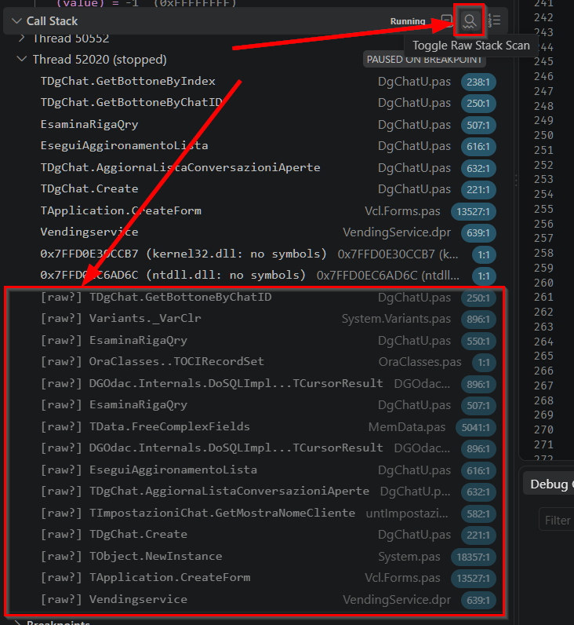

6. Threads and the call stack
When the program stops, it stops as a whole — every thread, reported together. Which thread triggered the stop does not limit what you can look at.
Threads
There is no separate Thread Status window: every live thread is a top-level row of the
CALL STACK section, with its frames underneath. Threads that announced a name through
TThread.NameThreadForDebugging show it: the debugger intercepts that
announcement as it happens and decodes the name, so a stack full of worker threads is
readable instead of a list of numbers.
Select any thread and you get that thread’s call stack, its frames’ locals, and its watches — regardless of which thread hit the breakpoint. For a deadlock or a race this is the whole job: stop once, then read every thread’s position.
The call stack
Frames are produced by a StackWalk64-based unwind, each with a function name
and a source line.
One detail that matters more than it sounds: caller frames are symbolicated at the return address minus one. A return address points at the instruction after the call, which on a line boundary belongs to the next statement — symbolicating it directly would report the wrong line for every caller in the stack. Backing up one byte lands inside the call, so the line you see is the call site.
Raw stack scan
Sometimes the unwinder has nothing to work with — no unwind data for the code in
question. This is mainly a 32-bit problem, where there is no .pdata to
consult. The call stack then ends early, and what you want to know is where the program
has been.
The raw stack scan is an opt-in fallback for exactly that: a brute-force sweep of the
thread’s stack for words that look like return addresses, resolved against every loaded
module. Turn it on with the rawStackScan launch flag, or toggle it from the
Call Stack view’s title bar during a session.

Vendingservice, everything below the divider is [raw?] output,
appended and greyed out rather than mixed into the real trace.
Results are marked so they can never be mistaken for a real unwind: [raw]
where the address is provably a call, [raw?] where there is no line table to
confirm it. Read them for what they are —
The presentation reinforces that. Swept entries are greyed out and always appended below the real frames, never mixed in among them. And selecting one shows no locals — not the locals of some neighbouring frame, which would be worse than nothing. There is no frame there to read; the address is just a number that was found on the stack.
Turning the scan on or off confirms itself in the status bar, and the confirmation repeats the warning rather than just saying “on”. That is deliberate: the feature is only dangerous if you forget what the extra entries mean.
Stepping and the other threads
A step command targets one OS thread. Every other thread is explicitly suspended for the duration of the step, including threads created while the step is in progress, so the program cannot run away underneath you between one line and the next. If the stepped thread exits mid-step, everything is thawed rather than left frozen.
The one case this cannot solve: if the thread you are stepping blocks on a lock held by a thread you just froze, the step cannot complete. That is inherent to freezing, and VS Code has the same limitation generally. The threading model covers the mechanism.